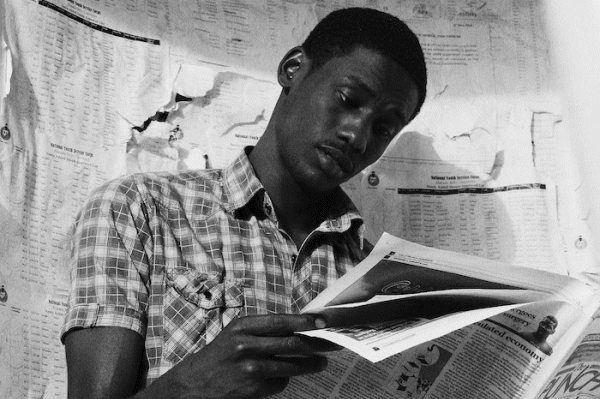

"There is no substitute for a local newspaper that is doing its job." - Warren Buffett
Local newspapers used to be the lifeblood of a healthy community.
Now, they're at risk of dissapearing forever.
Read More Below:
The decline of local news and creation of news deserts
Local newspapers used to be the lifeblood of a healthy community.
Now, they're at risk of dissapearing forever.
Read More Below: